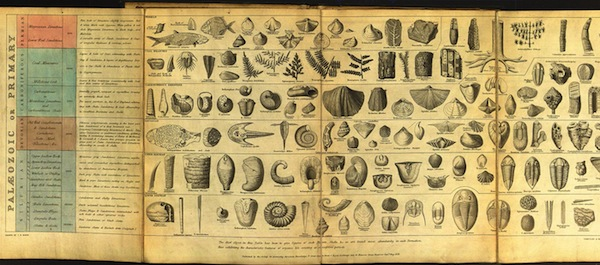
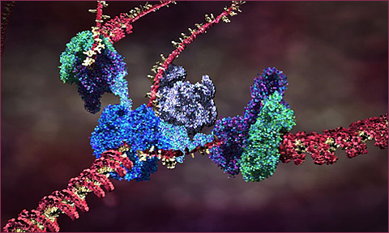

Evolutionary Systems
There have been more than four decades of computational systems inspired by natural evolution. It has become a major field of machine learning and optimization. Beyond AI, it has been used in hardware and circuit design, robotics, and more recently in industrial design and architecture. It has of course also been deeply explored in art and music.

Natural and artificial evolution
The theory of natural evolution combines population, diversity, heredity and selection. Evolution requires a population of individuals that exhibit diversity (both similarities and variations between each other, both within and between species). These individuals can produce new individuals; offspring that exhibit similarites with the parent(s) through heredity. However not all of the population can successfully reproduce. Any factor that affects the possibility of an individual reproducing, thus also affects what characteristics are inherited in the population as a whole. Charles Darwin's theory of natural selection, proposed in 1859, is that the section of the population that can reproduce is not entirely random, but rather is regulated by interactions between inherited characteristics and environmental constraints (such as available food, populations of symbionts, predators and parasites, and so on). Accordingly, the characteristics of a species may change over time (evolution), forming a history that can be investigated through the fossil records.

Artificial evolution is a form of computational simulation whose process mirrors the abstract structure of natural evolution:
- Maintain a population of finite individuals (which can reproduce)
- Support variation (including new characteristics) in the population
- Provide a mechanism of heredity between generations
- Provide a mechanism of selection
The main systematic differences are that the underlying mechanisms specified by us in advance, as are the initial populations and environmental conditions (if any). Most importantly, the mechanism of selection is usually predetermined. And of course, artificial evolution occurs in a much simpler substrate than real chemistry.
See Karl Sims' Genetic Images. 1991 Siggraph Paper
Scott Draves, “Evolution and Collective Intelligence of the Electric Sheep,” The Art of Artificial Evolution, 2008.
An excellent discussion of the genetic algorithm in art and its relation to Deleuze, by Manuel Delanda
Subtleties and misconceptions
Darwin's theory is sometimes misconceived as "survival of the fittest" or even the competitive "law of the jungle", but evolution turns out to be quite a bit more subtle than this.
First, the notion of "fittest" is misleading. It implies a static and absolute measure against which all individuals and species in the biological record can be compared. In natural evolution there can be no pre-defined (a priori) fitness measure. This is because the environmental conditions are highly dynamic, and thus selective criteria are quite contextual. The conditions in which we live evolve along with us, and the other species in our habitat, as we mutually influence each other. Evolution is an open-ended process.
Since there is no absolute goal or progress, the most we can measure in natural evolution is the changing frequencies over time of individual species, or of individual characteristics of a population. More importantly, evolution cannot be said to have a singular direction. That is to say, it is goal-less (non-teleological), and thus, counter to common opinion, natural evolution does not imply progress.
Nor is evolution a continuous process of change. The fossil records appear to show long periods of relative stability divided by relatively brief periods of biological invention. There are several competing theories as to why, but interestingly this "punctuated equilibrium" has appeared also in many artificial evolutionary systems.
An individual organism does not need to be optimally fit to the environment in order to contribute to the gene pool -- it simply needs to be fit enough to survive long enough to reproduce, i.e. to be viable. he survival of a natural species depends primarily on its viability; the ability of enough individuals to live long enough to reproduce within an unpredictable environment.
Evolution does not act on every facet of an organism, only those that directly influence viability (in the current environment). If a variation has neither positive or negative impact on the reproductive capability of an individual in the environment, this variation is called neutral. Since small variations are always occurring, neutral variations can tend to accumulate over time. Over time the gene pool may broaden and move quite far from its origin without causing any major changes in selective viability; this is called neutral drift. This may be an important mechanism to escape evolutionary dead-ends (local minima in the fitness landscape). This is certainly true for many artificial evolutionary systems. It has also been hypothesized as an explanation for the long chunks of apparently unused DNA in our own genome, and also for punctuated equilibrium.
Competition turns out not to be the prime mode of interaction between species; most species are relatively independent, and the ones that do closely interact are more likely to be collaborative (symbiotic, parasitic, etc.) than competitive, as that is more likely to lead to viability. Like our society, the natural environment is complex enough to provide multiple methods of making a living. Evolution does not imply that individuals display selfish, competitive behavior. When Dawkins described evolution in terms of selfish genes, it indicates a gene-centric perspective on evolution that implies selfless and sometimes altruistic behavior in organisms.
Evolution by itself is not particularly creative, and its importance may have been over-stated. A continuous generation of novel diversity, new characteristics, is essential to the theory of natural selection. However the theory does not account for how diversity arises, simply that there must be a mechanism, which usually operates during reproduction.
Heredity and variation: genetics
In 1865 Mendel proposed that characteristics are transmitted to offspring through particles of matter (which we now call genetic material). Schroedinger conjectured that these materials must be aperiodic crystals, and the actual structure of DNA was identified several years later. The "modern synthesis" in biology today has integrated genetics with natural evolution, through the interaction of genotypes and phenotypes:
- The phenotype is the manifestation of the genotype, the individual organism in the population. It is physical and dynamic. Natural selection only operates on the phenotypic level.
- The genotype is the genetic material that is transmitted during reproduction. It encodes information that is usually static during a lifetime. Different information leads to different phenotypic variations, or even different species. Heritable variation and the creation of new characteristics operates only at the genotypic level.
Hence the modern synthesis requires not only a model for how variation is introduced, but also how genetic material is transfered, how the phenotype accordingly emerges from the genotype (developmental models), and what other roles it plays. It is increasingly being understood how the complexity of the environment and materials of life are likely as much or more responsible for the variety of life than the genes themselves, however, these mechanisms are still in the progress of being revealed.
Briefly: a biological cell contains a vast array of different proteins, whose concentrations determine structures and behaviors of the cell. The proteins are specifed by information in the DNA genetic material (grouped physically into chromosomes). When a cell reproduces by mitosis, a copy of the DNA is made in the new cell. The sections of a DNA chromosome that code for behavior are called genes. These regions are constantly being transcribed, producing a specific RNA strand for each coding gene region which is in turn used to produce a specific protein; the protein string immediately folds up (in a way we cannot yet simulate) into a particular reactive shape which specifies the protein's behavioral role in the cell. This is a one-directional flow of information: Coding DNA -> RNA -> folding -> active protein. In addition to coding regions genes may also have regulatory region which can react with specific proteins to activate or inhibit the coding-protein system, forming a complex regulatory network of interactions by which one gene can activate or inhibit another, and also specify changes of behavior of a cell according to environmental conditions such as chemical signals. These networks can be fantastically complex even in very simple organisms, according to the scientific results of functional genomics. Between the coding and regulatory regions of DNA, there are huge sections of nongenic DNA, whose role (or lack thereof) is not yet understood.

The current theory of cell replication and DNA transcription been beautifully illustrated by Drew Berry; and more of his animations here
Genetic variation can occur during replication of the genome, such as copying-error mutations (reversals of segments, insertion & removal of segments, changing individual elements in the sequence, and pair-wise substitution over whole sections) and recombination (taking sections from two different parent genes to construct a new child gene).
Artificial evolution
An artificial evolutionary system thus requires:
- A representation of genotypes.
- A mechanism to produce phenotypes from genotypes (development).
- Mechanisms to introduce diversity to a genotype.
- A mechanism to evaluate the fitness (or viability) of phenotypes.
These components must be provided by the author. The system is then run by these steps:
- Initialization of a 'seed' population of genotypes
- Development of phenotypes from the genotypes
- Evaluation and selection of best/viable candidates of phenotypes, according to fitness criteria or ongong viability conditions, to choose who may reproduce.
- Reproduction, creating new genotypes by applying mechanisms of variation, according to variation rates/probabilities.
- Repeat from step (2) or terminate if a terminating condition is satisfied (such as sufficient fitness).
Steps 2-5 may be run in lock-step, or asynchronously with overlapping individual life-spans.
Genetic representation
Many systems represent genetic information as a sequence of data, such as a string of characters or binary digits. Some systems use more elaborate structures (trees, networks), but these are usually reducible to and encoded as linear sequences. After all, our genes wind up in complex structures with different reactive regions, but at the lowest level are just a long singular chain of A, G, C or T molecules.
The simplest systems have a fixed length, but nature shows quite a lot of variance (not particularly correlated with the size, complexity, or evolutionary age of a species).
Initializing the genotypes implies generating randomized candidates that stay within its bounds but hopefully give a sufficiently diverse range of the possibilities of the genotype. For a simple sequence of bits, symbols, or numbers, this is fairly easy to do.
Development
In some systems the developmental process is little more than a trivial mapping, but this potentially misses an entire and fascinating source of diversity. Incorporating more complex developmental models can lead to geometric variations that are not stored as simple parameters, to repeated segments and recursive structures, to symmetries, and to the re-application of common toolboxes toward a widely differing set of purposes -- all things that are evident in biological evolution.
Selection
For problem solving in data mining, engineering, design, architecture, etc.: If the fitness criterion is static and designed around a particular problem we wish to find a solution for, evolution can help evaluate & test candidate solutions and selectively breed them to produce better solutions, ideally converging on an optimal one, without having to understand or derive by proof. It is a form of optimization. However this process may take a long time or a lot of processing power to find a satisfactory result, or may not reach a result at all. Not all problems are suitable for evolutionary search.
Evidently, these systems differ markedly from natural evolution by having a static measure, and thus a singular teleological character, a meaningful sense of progress, across the entire history of the system. This is more akin to selective breeding than natural evolution.
Note that simply taking the best candidate alone is not necessarily the ideal strategy; selecting randomly by proportion to fitness ("roulette wheel" selection) may better overcome local maxima.
For art, music, and other less formalized domains we may need to consider other methods of selection, since a formal measure may not be possible, or the problem may not be clearly statable in advance. E.g. can we measure aesthetic quality in formal terms?
- Interactive selection. Pioneered by Dawkins' Biomorphs program and Karl Sims' evolved images, in which several candidates are presented to human observers, who apply the selection manually. Also known as aesthetic selection. A problem here is that the human becomes the bottleneck of evolution, constraining population sizes and rates of evolution to very small scales. It may arguably also tend toward selecting for the aesthetic average rather than the remarkable.
- An interesting variation is to make the selection continuous and implicit. Jon McCormack's Eden measured fitness globally according to how long gallery visitors remained in front of a particular evolving sub-population.
- Evolved/evolving selection. First evolve a population of artificial art critics, trained from human-evaluated examples, and then use these to apply selection criteria to a population of candidate artworks. Some projects have also proposed a form where one population represents the candidate products, and the other population represents artificial critics.
- A viability-oriented form of artificial evolution may be used for more theoretical and aesthetic branches of artificial life research. The viability measure arises as an emergent property of underlying laws of the world, such as the requirement to maintain energetic/metabolic balance or to maintain structural integrity, as well as the collective effects of multiple species and non-living dynamics within the environment. For this reason it is sometimes referred to as ecosystemic selection. See discussion here. This may still incorporate indirect interaction from human agents if desired.
Variation
The mechanisms of variation possible partly depend on the representation chosen. The two most common principles of variation in artificial evolution are naturally inspired:
- Random mutation; akin to errors copying DNA. If the genome is represented as a binary string, then random locations in the string may be replaced by new random characters. For example, a parent "dog" could produce children such as "fog", "dqg", and so on. Obviously some mutations will not create viable individuals.
- Sexual cross-over (or recombination): akin to sexual reproduction in biology. As a binary string, the child takes the first fraction from one parent, and the remainder from the other. For example, breeding the strings "dog" and "cat" could generate children such as "dot", "dat", "cag" and "cog".
- Other variations (insertion, deletion, inversion) are less common, but have been used. A more flexible system might also permit "doat", "caog", "dt", "tac", etc.
Why use reproduction for evolution? In the face of an unpredictable environment, we cannot know which strategy will be best; we can try small variations, and hedge our bets by making very many of them (population diversity). An individual loss is not catastrophic, but a few successes can be learned from. Furthermore, the face of unpredictibility implies that what was true today may not be tomorrow, so the flexibility to avoid timeless commitment is also a good strategy; but the inheritance of choices is a useful option when the environment retains some stability. If the world were fully predictable, a rational, teleological, monothematic strategy would be preferable. But the world isn't totally random either (if it was, there would be no valid strategy worth pursuing.)
See the red queen problem.
As with temperature-like parameters we saw in CA, a crucial factor in evolution is the rate or probability of variation. Too much, and the population may never significantly diverge from a randomly initialized one; too little, and it may find itself stuck on the first solution it finds, with a largely homogenous population. It may be wise to have different mutation rates for different genes, or for different members of a population, or by fitness rank etc. It is likely desirable to gradually reduce mutation rates over time, unless the population appears to be stagnating.
See also simulated annealing.
Genetic Programming
Genetic Programming was invented by Nigel Cramer in 1985, but greatly expanded through the work of John Koza. GP evolves programs; it is an example of metaprogramming.
GP has been used to generate programs to solve hard problems, and to evolve control systems for artificial agents and robots. Karl Sims used GP for his genetic images, and for his evolving virtual creatures.
The central concept is that the generating a phenotype is a process of generating code. Populations of generated programs can then be selected and evolved as usual.
Typically the programs for GP follow a tree-like structure. The leaves of the tree are terminals and the branches are functions. Terminals have no inputs; typical terminals are constant numbers and global variable names. Non-terminal functions are specified according to their operator (such as mathematical addition, multiplication, cosine, etc.); they have one or more inputs, which maybe terminals or other functions. This structure is natural to LISP programs:
(* 6 (sin (+ x 2)))
The above would be represented in Javascript code as follows:
return 6 * (Math.sin(x + 2))
The Linear Genetic Programming variant represents programs as sequences of instructions rather than trees. It more closely resembles the procedural nature of widely-used programming languages, virtual machines, assembly and machine code. Each instruction uses a single function, with zero or more arguments (constants or registers), and assigns to a register.
The above program could be linearized to normal form as follows:
(function() {
var r1 = 2;
var r2 = x;
var r3 = r1 + r2;
var r4 = Math.sin(r3);
var r5 = 6;
var r6 = r5 * r4;
return r6;
})();
The linear structure may appear more flexible, since it allows branches to reconnect; however the functional programming interpretation of the tree is provably equivalent so long as no operator carries history. Ultimately the choice depends on practical rather than theoretical questions.
Genetic representation
It may be convenient to represent these programs as a data structure, from which the phenotype code is generated. Doing so makes crossover and mutation much easier.
For example, integers can be used to specify which function or terminal type a node contains, and which nodes are used as arguments. Tree structures can nest their data directly, while linear structures can refer to nodes by integer register id (or register stack offset). Here is the above program as a list of instruction codes -- which is just a list of numbers!
// operator IDs: [ "constant", "global", "add", "mul", "sin" ];
// global IDs: [ "x" ];
var geno = {
[ 0, 2 ],
[ 2, 1 ],
[ 3, 1, 2 ],
[ 4, 3 ],
[ 0, 6 ],
[ 3, 5, 4 ],
}
Initialization
Generating a seed tree can follow a recursive structure, starting from the root at depth 0, up to a maximum depth m:
- If depth equals
mchoose a terminal at random, - Else select a function or terminal at random.
- If the node type is a function, choose a random function. Each function has a specific number of children (e.g. the + function has two children); for each child node, repeat the algorithm with depth increased by one.
An alternative algorithm for linear GP, with n operations:
- Loop from 1 to
n:- If
nis less than the maximum number of arguments (typically 2 or 3), create a random terminal node. - Else create a random terminal or a random function.
- If the node type is a function, use a randomly selected previous node for each of the function arguments.
- If
- The root (result) node is node
n.
Variation
For a linearized genotype representation, the genetic mutations and crossover operators are similar to other sequence-based evolutionary systems.
For tree-like representations it becomes more complex and interesting: Mutations on a tree can include modifcation of instruction arguments, replacement of sub-trees, function mutation, etc. Cross-over can be implemented as swapping sub-trees of parents.
Meta-evolution: the mechanisms of evolution (including development, variation, etc.) are also subject to variation and selection. After all, sexual reproduction had to be discovered. It turns out that some parts of our genes have evolved to be far less volatile than others, for good reason.
Jurgen Schmidhuber proposed using GP to evolve GP (Meta-GP), since things like chromosomes, crossover etc. are themselves phenomena that have evolved.
There is an obvious analogy of the genotype-as-code and phenotype-as-running-program underlying most systems. Few systems provide full models of development and genetic transfer, assuming instead a relatively predictable translation. Some systems explicity encode numeric values in the genotype (this is not naturalistic).